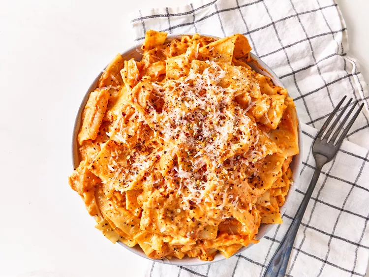

Lasanga
Home

Description
This 3 ingredient cheesy lasagna sheet pasta could not be easier. Serve topped with Parmesan cheese, red pepper
flakes, and freshly cracked black pepper if you like.
Ingredients
8 ounces lasagna noodles, broken in half
1 (24-ounce) jar tomato sauce
8 ounces shredded whole milk mozzarella cheese
STEPS
Bring a large pot of lightly salted water to a boil. Cook lasanga noodles in the boiling water, stirring
occasionally, until tender yet firm to the bite, 10 to 12 minutes.
Strain noodles and return to the pot. Add tomato sauce and cook on medium heat until sauce is heated through,
about 5 minutes.
Add cheese and stir until cheese is melted. Serve immediately.